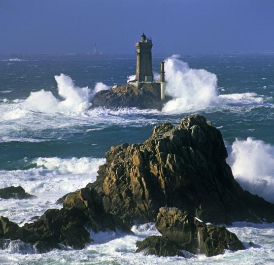
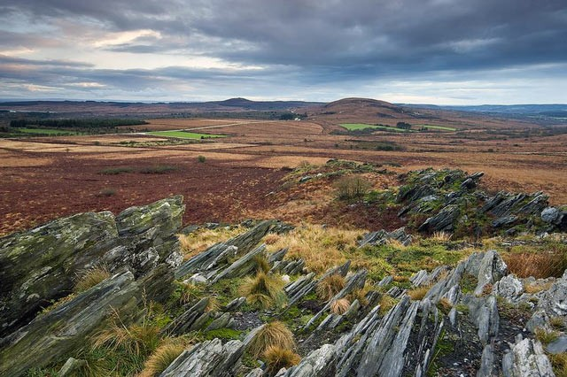
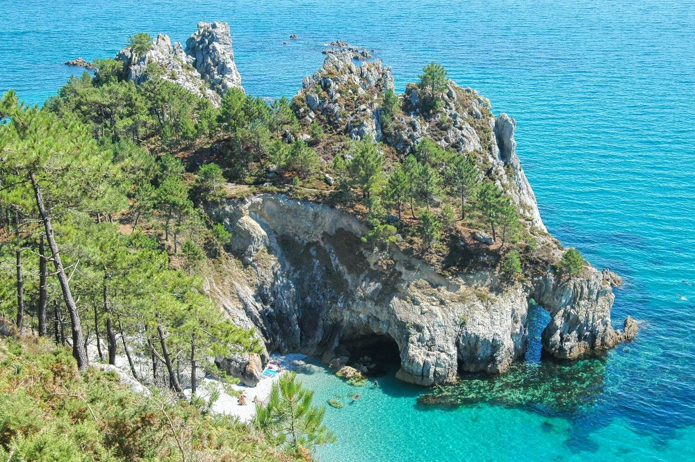
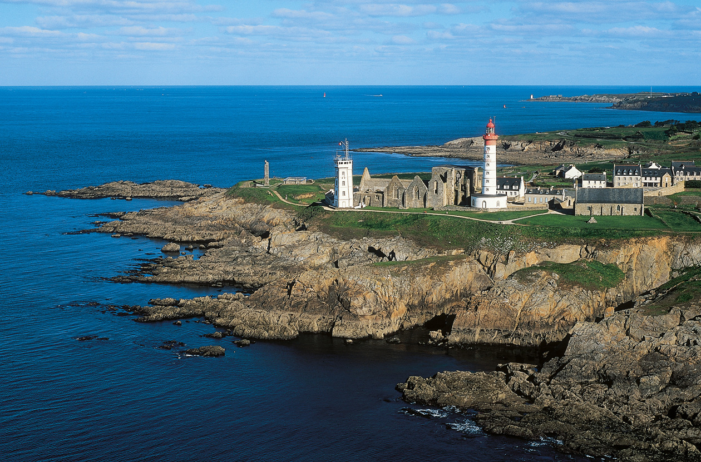
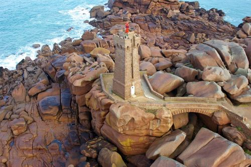

La Pointe du Raz (dans le Finistère) est une avancée rocheuse à l'extrémité du Cap Sizun se jetant dans le mer d'Iroise. Labellisé Grand Site de France, le lieu est connu pour ses courants virulents frappant les côtes et offrant un superbe spectacle aux visiteurs. Par temps dégagé, il est même possible d'observer l'île de Sein et le phare d'Ar-Men au large.
Vous voilà sur les plus hauts sommets de Bretagne (devant les montagnes Noires), culminant à 385 mètres. La chaîne, située dans le massif Armoricain oscille entre pointes rocheuses, landes et tourbières à découvrir en randonnée.
C'est la pointe centrale du Finistère, une presqu'île répartie sur 7 communes, dont Camaret-sur-Mer et Morgat. Avec de superbes paysages aux couleurs changeantes, le cap de la Chèvre, la Pointe de Pen-Hir et la Pointe des Espagnols où faire le plein d'embruns marins et bien sûr la plage de l'île Vierge aux airs exotiques.
Il y a Ouessant, austère au premier abord, mais dévoilant des plages, des landes et des sentiers à sillonner à vélo. L'île de Sein, ses phares, ses maisons typiques aux façades colorées et la route du phare permettant quasiment de traverser l'île. Et l'archipel de Molène, qui compte 7 îles principales de tailles mineures mais où on a la possibilité d'admirer des phoques et peut-être croiser des dauphins sur la route.
La petite station balnéaire de Ploumanac'h, sur la côte de Granit Rose abrite sur son littoral d'imposants rochers aux formes des plus incongrues. Et en fonction de la lumière du soleil, elles affichent une douce teinte rosée.
